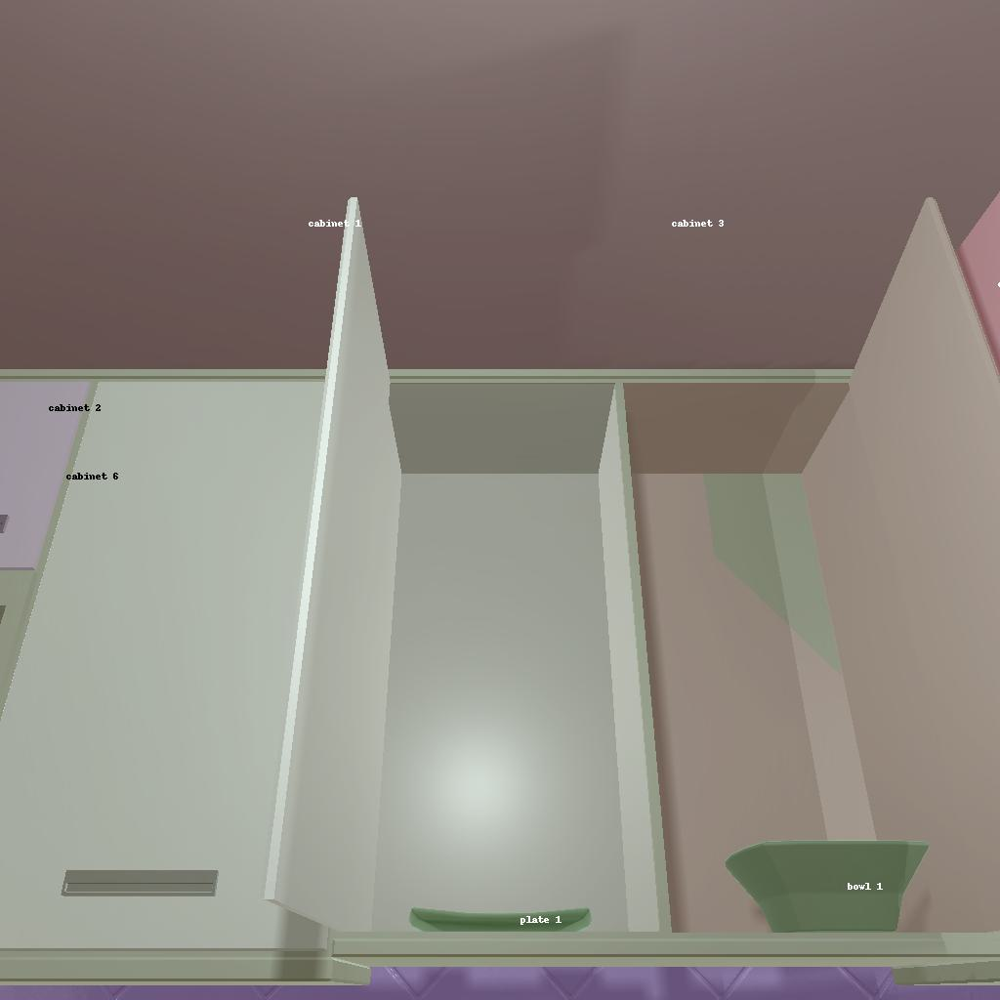

---------------------------------------------------------task: 21---------------------------------------------------------
--------------------------------------------------------------------------------------------------------------------------------------------------------------------
--------------------------------------------------------------------------------------------------------------------------------------------------------------------
Step:--------------------------------------------------------------------------10-------------------------------------------------------------------------------
----------------------------------------
VLM Prompt:
Image1:
Image2:
Image3:
**Instruction**
1. Analyze the provided image to identify all visible household objects, focusing on those relevant to the task description "heat some cup and put it in countertop."
2. Use the analysis of the image and the task hint "The agent must find an object of the desired type, pick it up, go to a microwave, heat the object with the microwave, then find the correct location to place it, and put it down there. The agent does not need to use the microwave button or open the microwave to heat the object, and the agent just needs to do action that is "heat the object with the microwave"." to answer the question: what is the most reasonable action in the choices for the task description "heat some cup and put it in countertop"?
4. Decide and write the answer using the template: The answer is: (i): , where i is the real number. If there is no desired object in the image, search every place based on **Initial Observation** to find the object. And if no one is exactly correct, choose a similar answer.
**Initial Observation**
You are in the middle of a room. Looking quickly around you, you can see cabinet (1-6), microwave (1), countertop (1-2), coffeemachine (1), toaster (1), sink (1), sinkbasin (1), fridge (1)
**Answer Choices**
(1): go to cabinet 2
(2): go to cabinet 3
(3): go to microwave 1
(4): go to cabinet 4
(5): go to cabinet 5
(6): go to countertop 1
(7): go to coffeemachine 1
(8): go to toaster 1
(9): go to countertop 2
(10): go to sink 1
(11): go to sinkbasin 1
(12): go to fridge 1
(13): open cabinet 1
(14): close cabinet 1
(15): take bowl 1 from cabinet 1
(16): take plate 1 from cabinet 1
(17): examine cabinet 1
**Answer**
Let's think step by step by following the instructions.
----------------------------------------
----------------------------------------
Original Response:
Firstly, we need to find a cup to heat, as per the task description "heat some cup and put it in countertop." From the initial observation, we know there are several cabinets in the room. We should check inside the cabinets for a cup because that's a common place where cups are stored.
Looking at the images provided, Image 1 and Image 2 are identical, and Image 3 shows only one cabinet (cabinet 1) opened with a plate and a bowl inside. There is no cup visible in the open cabinet. Since we haven't found a cup yet, we should continue searching the cabinets.
Based on the task hint, we do not need to perform any actions with the microwave other than the "heat the object with the microwave" action, and we do not need to concern ourselves with the coffee machine, toaster, sink, sink basin, or fridge at this time.
Therefore, the most reasonable action from the choices provided would be to continue searching the cabinets for a cup. The next step is to open another cabinet since we have already examined cabinet 1 and found no cup there.
The answer is: (13): open cabinet 1.
----------------------------------------
----------------------------------------
>>> Refine Original VLM Response and Get Pure Action: open cabinet 1
----------------------------------------
-----------------------------------------------------------------
Running time: 12.432805061340332 seconds
Total Money: 13.500230000000004
-----------------------------------------------------------------
-----------------------------------------------------------------
Text Observation:Nothing happens.
-----------------------------------------------------------------
UNSUCCEED